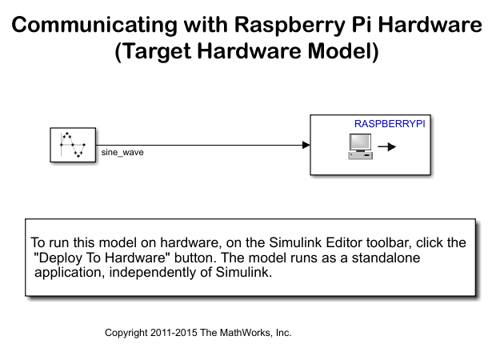
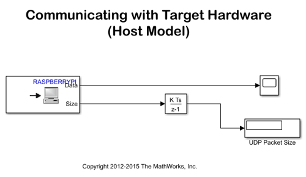
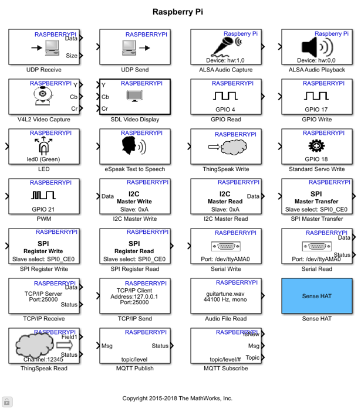

Communicating with Raspberry Pi® Hardware
This example shows you how to send data using the UDP Ethernet protocol from a Simulink® model running on Raspberry Pi® hardware to another model running on the host computer
Contents
- Introduction
- Prerequisites
- Required Hardware
- Target Hardware Model
- Host Model
- Task 1 - Review Raspberry Pi Block Library
- Task 2 - Run UDP Communication Model on Raspberry Pi Hardware
- Task 3 - Run UDP Communication Model on the Host Computer
- Task 4 - Stop the Model Running on Raspberry Pi Hardware
- Other Things to Try:
- Summary
Introduction
In this example you will learn how to create and run a simple Simulink model on Raspberry Pi hardware that sends data to the host computer using User Datagram Protocol (UDP). A companion model running on the host computer will receive UDP data packets coming from Raspberry Pi hardware.
Prerequisites
- We recommend completing Getting Started with Raspberry Pi® Hardware example.
Required Hardware
To run this example you will need the following hardware:
- Raspberry Pi hardware
Target Hardware Model
Host Model
Task 1 - Review Raspberry Pi Block Library
Simulink Support Package for Raspberry Pi Hardware provides I/O peripheral blocks for Raspberry Pi hardware for easy integration with algorithms designed in Simulink.
1. Enter simulink at the MATLAB® prompt to open the Simulink Library Browser.
2. In the Simulink Library Browser, navigate to Simulink Support Package for Raspberry Pi Hardware.
3. Double-click the UDP Send or UDP Receive blocks. This opens the block mask, which contains a description of the block and parameters for configuring for UDP-based communications.
Task 2 - Run UDP Communication Model on Raspberry Pi Hardware
In this task, you will configure and run a simple model that sends UDP packets to the host computer.
1. Open the target hardware model.
2. Double-click on the UDP Send block. Open the block mask and enter the IP address of your host computer in the Remote IP address edit box. For example, if the IP address of your host computer is 10.10.10.1, enter '10.10.10.1' in the block mask. Do not change the Remote IP port parameter. Click OK to save and close the block mask.
3. In your Simulink model, click the Deploy To Hardware button on the toolbar.
4. The model running on Raspberry Pi hardware will start sending UDP packets to port 25000 of your host computer.
Task 3 - Run UDP Communication Model on the Host Computer
In this task, you will run the host model that receives the UDP packets sent by the model running on Raspberry Pi hardware.
1. Open the host model. This model has a UDP Receive block that is configured to receive UDP packets sent by the model running on Raspberry Pi hardware. Double-click on the UDP Receive block mask. Note that the Local IP port is set to 25000, and the output data type is set to "double".
2. Click the Play button to start simulation.
3. Double-click on the Scope block to see the sine wave sent by the model that is running on Raspberry Pi hardware. The Display block in the model shows the number of UDP packets received from the Raspberry Pi hardware since the start of simulation of the host model.
Task 4 - Stop the Model Running on Raspberry Pi Hardware
1. On MATLAB command line, execute the following
r = raspberrypi; stopModel(r,'raspberrypi_communication');
Other Things to Try:
- Modify the host model so that the Scope block displays data only when Size port of the UDP Receive block outputs a positive number.
Summary
This example showed how to send data from a model running on Raspberry Pi hardware to the host computer using UDP protocol, and also described how the data may be received by another model running on the host computer.